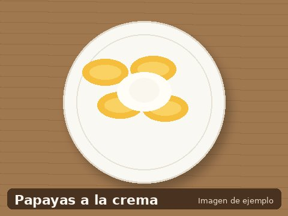

Papayas a la crema
- 4 porciones
- 25 minutos + 2 horas de frío
- Dificultad: fácil

Las papayas a la crema son un postre clásico de Chile, especialmente popular en La Serena y la zona norte. Su dulzura natural y la suavidad de la crema las hacen irresistibles.
Ingredientes (4 porciones)
- 4 papayas chilenas medianas
- 1 taza de azúcar
- 2 tazas de agua
- 1 astilla de canela
- 200 ml de crema de leche
- 2 cucharadas de azúcar flor
Preparación
- Pelar las papayas, partirlas a la mitad y retirar las semillas.
- Preparar un almíbar con el agua, el azúcar y la canela. Hervir 5 minutos.
- Añadir las papayas y cocinar a fuego medio por 15 a 20 minutos.
- Retirar y dejar enfriar. Refrigerar por al menos 2 horas.
- Batir la crema de leche con el azúcar flor hasta que esté firme.
- Servir las papayas frías con la crema batida encima.